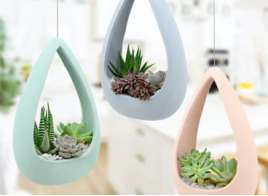

Cacti and succulents are easy care plants for any home or patio.
Cacti and succulents are now a very common houseplant and caring for your cacti and succulents is important. They come in a vast range of shapes and sizes from the petite to the grand. Cacti and succulents fall into the same group because they both have characteristics meaning they can survive in arid environments.
The native habitat for most cacti and succulents is a desert. Therefore, they will grow best in lots of light, good drainage, high temperatures, and low moisture. However, there are some cacti and succulents, such as Schlumbergera, which have a native environment of a rainforest so prefer semi-shade and humid conditions.
Caring for cacti and succulents means trying to recreate their natural habitat. Here are the main things that you need to consider when caring for your cacti and succulents.
Cacti and succulents thrive with good light sources, and it is best to place cacti and succulents in a bright place. A south facing position will provide good sunlight. However, be careful to not put them in direct sunlight because the intense light can make the plants turn a yellow colour. The optimum light depends on the variety of cacti and succulent that you are growing. For example, forest-growing epiphytes, such as Rhipsalis, need semi-shade, but an Echeveria needs bright light.
During the autumn and winter months, it is best for the plants to be kept cool at night with temperatures of around 8°C to 10°C. In the spring and summer the plants need good ventilation, but will survive in high temperatures.
A free-draining compost is a good compost to use as it has added girt and sand for optimum drainage. It also contains the right level of nutrients for your cacti and succulents.
There is a common misconception that cacti and succulents only require a small amount of water. Even though they have water-storing characteristics in their leaves and stems which allow them to survive in dry habitats, they will certainly not thrive with little water. Watering is an essential part to how well your cacti or succulent grows. Overwatering will stunt growth, but under-watering causes shrivelling.
Tepid rainwater should be used for watering, rather than tap water. This is because the minerals in tap water build up in the soil and can cause deposits on the leaves. Minerals also disrupt the flow of essential nutrients to the plant.
In the growing season, the plants should be watered at least once a week. When watering, the soil should be given a good soaking, allowing excess water to drain away. Allow the compost to dry out slightly between each watering.
Feed your plants once a month using special cacti and succulent feed. It helps them to produce healthy growth with more disease tolerance and better flowering. Simply use the dosing chamber to get a 5ml dose of the feed and add to 1 litre of water.
This is the time where the plants enter a rest period. Watering should be reduced so that the potting mix dries out between the watering. The regularity of watering is dependent on the environment they are in and the variety of succulent. Winter-flowering cacti needs to be in the warmth and have regular watering at this time, but desert-dwellers can be left un-watered. You do not need to feed cacti or succulents during this period.
Keeping these conditions gives the best care for your cacti or succulent. Most importantly, remember when it comes to the caring for your plant is that you are trying to recreate its natural habitat!